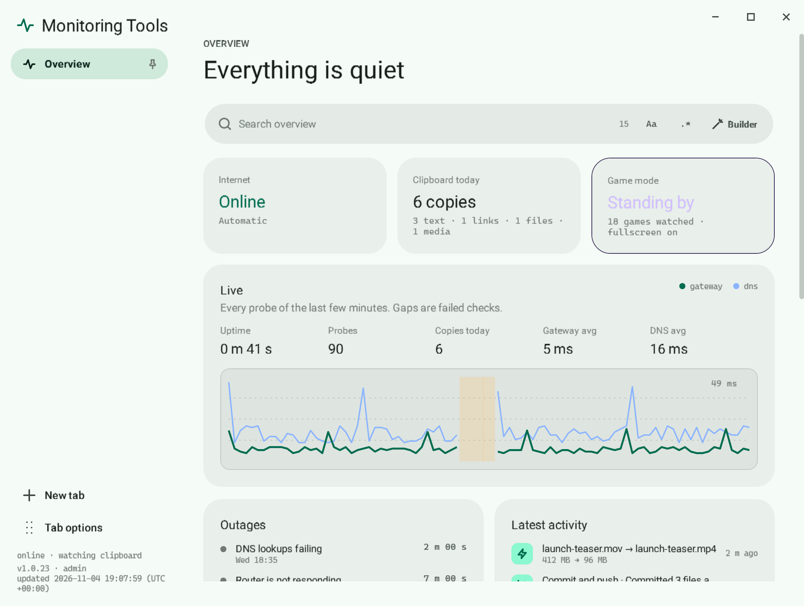
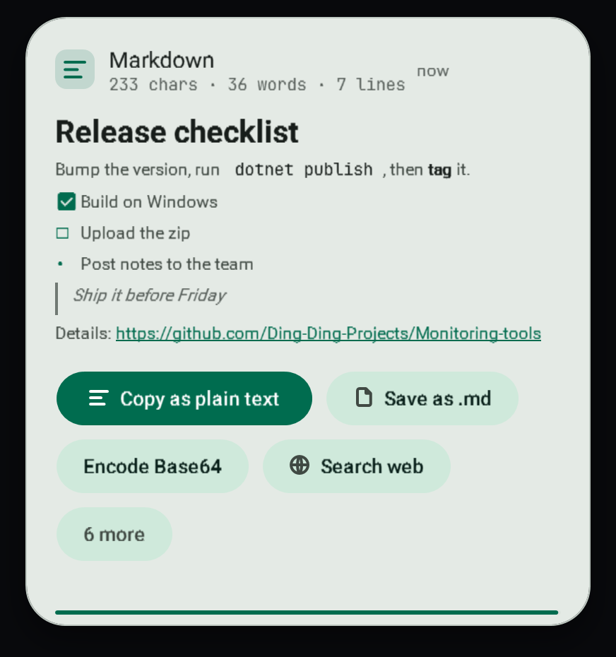

LIVE gateway 5 ms · dns 16 ms · release v1.0.57
靜靜雞幫你睇實部電腦。
A Windows tray app that shows what you copied, tells you why the internet dropped, and turns a copied path into a finished conversion.
This site explains and downloads the app. It is not the app, and nothing on it runs on your computer.


Areas
Articles
Lines at v1.0.57
112,943
Needs internet
never
Bottom right, three seconds, always on top. Hover and the actions fit what you copied: open it, convert it, strip the quotes, move the files.
Then one press: release and renew, or switch to Google or your saved DNS. Illustration of the app's checks.